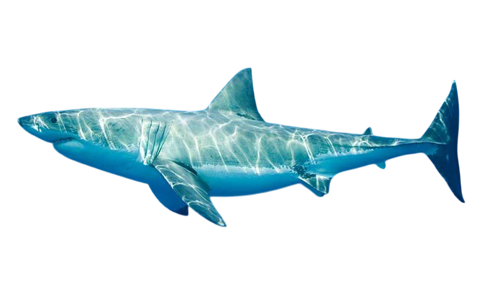

El tiburón blanco, gran tiburón blanco o jaquetón es la especie de peces más grande y feroz de todos depredadores marinos. Su nombre científico es Carcharodon carcharias.
El tiburón blanco es un tiburón grande, normalmente mide entre 500 y 580 cm, siendo las hembras mayores que los machos. Tiene forma fusiforme, con ojos negros, hocico cónico y achatado. Sus dientes son grandes, triangulares y serrados.Su coloración es gris marronosa por la parte dorsal, más clara en los lados y blanca por la parte ventral. La primera aleta dorsal es grande y triangular, la segunda y la anal son más pequeñas. La aleta caudal tiene forma semilunar. Delante de las aletas pectorales tiene las hendiduras branquiales que son largas.
El tiburón blanco se reproduce preferiblemente en aguas templadas, durante la primavera o el verano. Su reproducción es ovovivípara, es decir, a través de la fecundación interna de los huevos dentro de la hembra, en donde maduran hasta eclosionar y entonces la cría es expulsada fuera del cuerpo materno.La gestación de esta especie toma alrededor de un año, y alrededor de tres o cuatro crías suelen nacer por vez, alejándose rápidamente de la madre para no servirle de presa. El canibalismo es común en esta especie, y puede ocurrir incluso dentro del útero materno, en donde las crías más fuertes se devoran a las débiles o a los huevos que han demorado demasiado en abrir.
Es, junto a la orca, uno de los mayores depredadores marinos y su espectro de presas es muy amplio y variado (¡en su estómago han llegado a encontrarse hasta matrículas de coche!). Suelen alimentarse de grandes peces (atún, bacalao, pez espada ...), tortugas, focas, leones marinos, otros tiburones, pequeñas ballenas y algún que otro delfín. Tampoco se lo piensan demasiado a la hora de alimentarse de animales ya muertos.Curiosamente suelen rechazar a las nutrias y las aves marinas como alimento. Su metabolismo es muy rápido y eso les hace tener siempre un gran apetito. A pesar de tener más de 3.000 dientes no mastican a sus presas sino que las desgarran y se tragan los pedazos.
Al contrario de lo que se suele pensar, los tiburones blancos son animales sociales con patrones de conducta bastante complejos, aparentemente "hablan" unos con otros mordiendo y cogiéndose con las mandíbulas suavemente (de ahí sus numerosas marcas y cicatrices. A pesar de su mala fama, no se dedican a ir a la caza de seres humanos y cuando se produce algún ataque es porque el tiburón los confunde con alguna de sus presas habituales o bien por este curioso modo de relacionarse, esto explica que no los devore luego.
Los jaquetones suelen vivir cerca de la costa, aunque se les ha llegado a ver a más de mil metros de profundidad. Son grandes cazadores, ágiles (pueden realizar impresionantes saltos en la superficie), rápidos y eficientes, atacan a sus víctimas, por sorpresa, desde abajo y tras una primera dentellada mortal, esperan a que se desangren.Son capaces de recorrer grandes distancias y aunque recientes estudios parecen demostrar que son animales nómadas, también se ha demostrado que algunos viven regularmente en sus zonas favoritas (golfo de Spencer, Australia; islas Farallon, California y Dyer Island, Sudáfrica) para alimentarse. Suelen viajar solos aunque se han dado casos de parejas e incluso de grupos de siete u ocho escualos.
El tiburón blanco vive casi exclusivamente en las zonas próximas a las costas, en donde abunda la luz y la vida, permitiéndole así un acceso constante a sus presas.Su metabolismo le permite mantenerse ligeramente más caliente que el agua, pero no lo suficiente como para poblar las aguas gélidas del ártico o de la Antártica, por lo que no suelen hallarse en dichas regiones. Sin embargo, sí puede descender hacia aguas más frías de hasta 1 kilómetro de profundidad, pudiendo colonizar nichos alimenticios de menor competencia.
Es común hallar tiburones blancos en los mares próximos a las Antillas Menores, en la región atlántica al oriente del Caribe, así como en regiones de las Antillas Mayores, como el Golfo de México, Florida, Cuba y la costa Este de los Estados Unidos. También son frecuentes en la franja costera sudamericana, desde Rio Grande do Sul a la Patagonia argentina, así como en las costas del océano Pacífico de la región occidental de los Estados Unidos, o de Sudamérica (de Panamá hasta Chile).Además, son muy abundantes en la Gran Barrera de Coral en Oceanía, así como en archipiélagos del Pacífico en Hawaii, Fiyi y Nueva Caledonia, Australia, Tasmania, Nueva Zelanda, en todo el litoral asiático y africano (especialmente en Sudáfrica y en las desembocaduras de los ríos Congo y Volta).